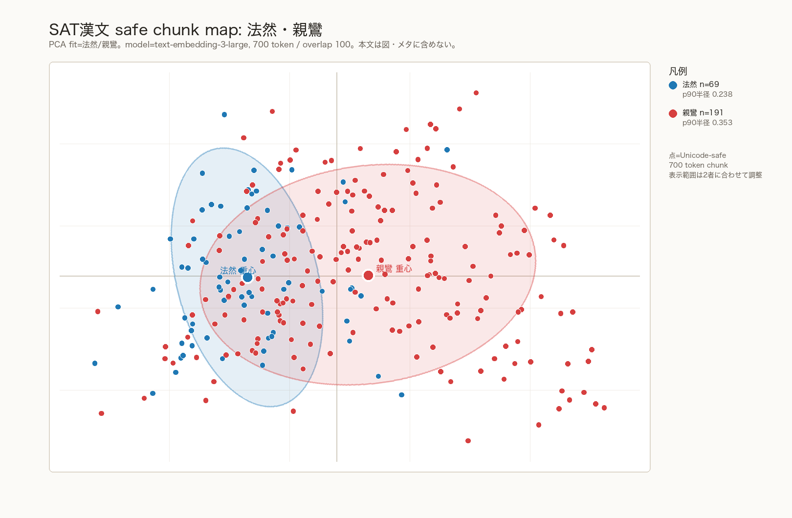
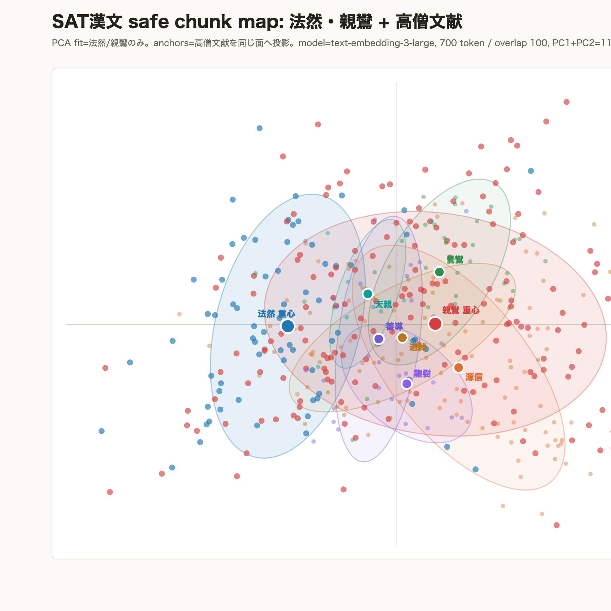
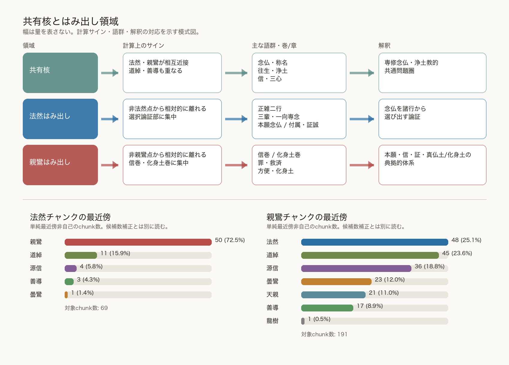
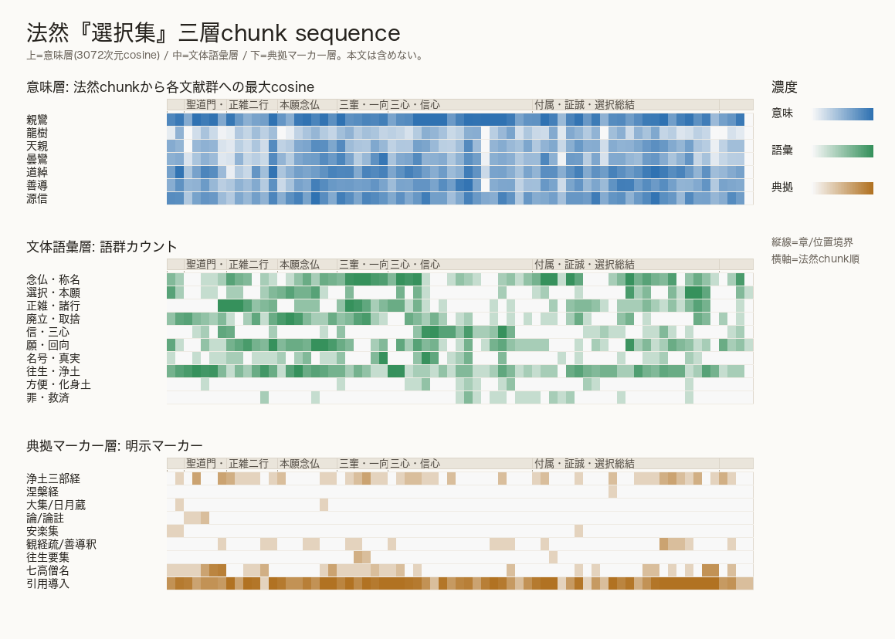
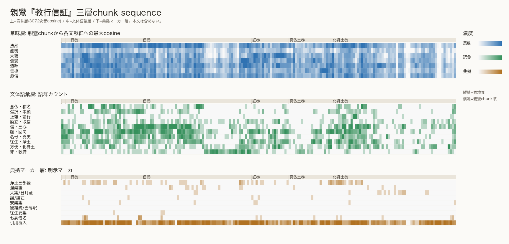

要旨
本稿は、法然『選擇本願念佛集』と親鸞『顯淨土眞實教行證文類』が、意味空間上でどのように重なり、また共有核から相対的に離れて現れる「はみ出し領域」（相対的突出領域）がどの方向に現れるかを、意味層・文体語彙層・典拠マーカー層の三層から検討する探索的研究である。文体語彙層は厳密な文体計量ではなく、辞書ベースの語彙・主題濃淡として扱う。
結果として、法然チャンク69件の最近傍非自己は親鸞50件、道綽11件、源信4件、善導3件、曇鸞1件であり、法然チャンクの多くは親鸞文献チャンクと意味空間上で強く重なる。一方、親鸞チャンク191件の最近傍非自己は法然48件、道綽45件、源信36件、曇鸞23件、天親21件、善導17件、龍樹1件に分かれた。
共有核からのはみ出し領域を比較すると、法然側では正雑二行、諸行との取捨、本願、付属・証誠など、念仏を諸行から選び出す論証が現れた。これに対し親鸞側では、信巻の信・三心・罪救済、化身土巻の護法・鬼神・宇宙秩序、外教批判、方便・真仮整理が目立った。
キーワード: 法然、親鸞、選択本願念仏集、教行信証、共有核、はみ出し領域、意味埋め込み、三層分析、SAT、典拠マーカー
目次
1 はじめに
本稿は、拙稿「意味・文体・典拠マーカーの三層地図による仏教文献探索」を受け、対象を浄土教文献に狭めて再検討する探索的研究である。前稿では、意味的に近いこと、文体的に近いこと、典拠・引用経路として近いことは同一ではない、という点を中心命題とした。
本稿では、法然の代表的著作として『選擇本願念佛集』を、親鸞の代表的著作として『顯淨土眞實教行證文類』を中心対象に据える。両者は浄土教の中心問題を共有するため、意味空間上でも大きく重なることが予想される。したがって、本稿で重要なのは「重なるかどうか」ではなく、重なった上で、どの方向に差異が出るかである。
ここでいう「はみ出し領域」とは、共有核から相対的に離れて現れる本文領域、すなわち相対的突出領域を指す探索的な作業概念である。
2 データ
分析本文はいずれもSAT大正新脩大藏經テキストデータベースから取得した漢文本文を用いた。比較アンカーとして、浄土教祖師文献から龍樹、天親、曇鸞、道綽、善導、源信のテキストを加えた。
| 分類 | 著者 | 文献 | SAT ID・範囲 | 扱い | チャンク数 |
|---|---|---|---|---|---|
| 中心 | 法然 | 選擇本願念佛集 | T2608 | 全体 | 69 |
| 中心 | 親鸞 | 顯淨土眞實教行證文類 | T2646 | 全体 | 191 |
| アンカー | 龍樹 | 十住毘婆沙論 易行品 | T1521, 0038a25--0040a22 | 抜粋 | 6 |
| アンカー | 天親 | 無量寿経優波提舎願生偈 | T1524 | 全体 | 9 |
| アンカー | 曇鸞 | 往生論註 | T1819 | 全体 | 31 |
| アンカー | 道綽 | 安楽集 | T1958 | 全体 | 42 |
| アンカー | 善導 | 観無量寿仏経疏 | T1753 | 全体 | 23 |
| アンカー | 源信 | 往生要集 | T2682 | 全体 | 73 |
本文取得では、SAT HTMLから本文行を抽出し、UI部品、HTMLタグ、画像プレースホルダ、SAT行番号の本文混入を除去した。公開版にはraw本文、processed text、chunk preview、embedding vectorを含めない。
3 方法
本文は tiktoken の cl100k_base でトークン化し、700トークン、100トークン重なりでチャンク化した。チャンク本文はUnicode文字境界に合わせて作成し、各チャンクにSAT行範囲、チャンク番号、SHA-256 hashを付した。
埋め込みにはOpenAI text-embedding-3-large を用いた。本稿で分析した各チャンクベクトルは3072次元である。法然・親鸞チャンクでPCAを適合し、祖師文献アンカーは同じPCA面へ投影した。PCA 2軸合計の寄与率は約11.6%であり、2次元図は探索用の投影である。
- 意味層: 3072次元コサイン類似度、2次元PCA上の距離、最近傍非自己、最近傍アンカー。
- 文体語彙層: 辞書ベースの語群カウント。厳密な文体計量ではなく、語彙・主題の局所的濃淡を示す代替指標である。
- 典拠マーカー層: 経名、論釈名、祖師名、引用導入句の辞書カウント。引用検出そのものではない。
はみ出し候補は、2次元PCA上の最近傍非自己距離 di と、3072次元空間での最近傍非自己コサイン類似度 si から、pi = di(1 - si) として抽出した。
4 結果


| 領域 | 計算上のサイン | 主な語群・巻/章 | 解釈 |
|---|---|---|---|
| 共有核 | 法然・親鸞チャンクが相互に近接し、道綽・善導などのアンカーも重なる | 念仏・称名、往生・浄土、信・三心 | 専修念仏・浄土教的共通問題圏 |
| 法然はみ出し | 非法然点から相対的に離れ、選択論証部に集中 | 正雑二行、三輩・一向専念、本願念仏、付属・証誠 | 念仏を諸行から選び出す論証 |
| 親鸞はみ出し | 非親鸞点から相対的に離れ、信巻・化身土巻に集中 | 信巻、化身土巻、罪・救済、方便・化身土、廃立・取捨 | 本願・信・証・真仏土/化身土の典拠的体系 |
| 対象 | 最近傍グループ | チャンク数 | 比率 |
|---|---|---|---|
| 法然 | 親鸞 | 50 | 72.5% |
| 法然 | 道綽 | 11 | 15.9% |
| 法然 | 源信 | 4 | 5.8% |
| 親鸞 | 法然 | 48 | 25.1% |
| 親鸞 | 道綽 | 45 | 23.6% |
| 親鸞 | 源信 | 36 | 18.8% |
| 親鸞 | 曇鸞 | 23 | 12.0% |
| 親鸞 | 天親 | 21 | 11.0% |



法然側のはみ出し上位24件は、付属・証誠・選択総結10件、三輩・一向専念4件、本願念仏4件、三心・信心3件、正雑二行3件であった。親鸞側では、信巻13件、化身土巻8件を中心に広がる。
| 対象 | 箇所 | SAT行範囲 | 近傍・語群 | 読解上の確認点 |
|---|---|---|---|---|
| 法然 | chunk 7, 正雑二行 | T2608, 83.0003a04--0003b04 | 最近傍は親鸞、近傍祖師は善導、語群は正雑・諸行 | 正行・雑行の分類を通じて、念仏を諸行から選び出す論証として読める。 |
| 親鸞 | chunk 84, 信巻 | T2646, 83.0614a08--0614b05 | 最近傍は源信、語群は罪・救済 | 信巻の罪・救済問題が、源信方向の主題圏と接しながら現れる。 |
| 親鸞 | chunk 182, 化身土巻 | T2646, 83.0640b28--0640c27 | 最近傍は道綽、語群は廃立・取捨 | 化身土巻の外教批判・真仮整理が、道綽方向の問題圏と接しつつ現れる。 |
5 考察
以下の考察は、埋め込み空間上の配置、高次元コサイン類似度、2次元PCA上のはみ出し、辞書ベースの語群、典拠マーカーから得た探索的所見である。本稿の結果は、既存研究を置き換える結論ではなく、既存研究と照合すべき精査候補を抽出する探索地図である。
法然は「念仏を選ぶ論理」を構成する
法然『選択集』の特徴は、念仏を諸行から選び出す論証にある。本分析で抽出したはみ出し領域でも、正雑二行、諸行との取捨、本願、三輩・一向専念、付属・証誠が強く現れた。
親鸞は「本願・信・証の典拠的体系」へ展開する
親鸞『教行信証』は、法然に近い領域を持ちながら、道綽、源信、曇鸞、天親、善導へ広がった。とくに信巻や化身土巻では、法然近接と親鸞側突出候補、祖師近接が混在する。
三層分析の意義
意味層だけでは解釈が混ざる。意味層、文体語彙層、典拠マーカー層を分けることで、意味的近接をただちに影響関係や教義的一致として読んでしまう危険を抑えることができる。
6 限界
- 2次元PCAは全分散の約11.6%のみを示すため、図上の距離は高次元空間の近傍関係と必ずしも一致しない。
- チャンクは700トークン・100トークン重なりであり、巻・章・引用単位などの自然境界とは一致しない。
- 語群カウントは辞書ベースの限定的な実装であり、否定、引用者、文脈、語義の違いを見ていない。
- 典拠マーカー層は引用検出そのものではない。
- 古写経本、異本、写本系資料はまだ直接分析に組み込んでいない。
7 結論
法然と親鸞は意味空間上で強く重なる。しかし、本稿で重要なのは、重なるかどうかではなく、共有核から何がどの方向へはみ出すかである。
法然側のはみ出し領域は、念仏理解の単純な差というより、念仏を諸行から選び出す論証、すなわち正雑二行、取捨、選択、本願、付属・証誠のまとまりとして現れる。親鸞側のはみ出し領域は、信巻の罪と救済、化身土巻の方便・真仮整理、護法・鬼神・宇宙秩序、外教批判として現れ、法然側とは異なる広がり方を示した。
これは既存研究を置き換える結論ではなく、歴史研究・引用研究との比較によって検証すべき精査候補である。
参考文献
- 上山大信「意味・文体・典拠マーカーの三層地図による仏教文献探索：宗派別参照群・阿弥陀経二訳・親鸞文献の予備的分析」2026. 前論文HTML（2026年6月5日閲覧）
- SAT大正新脩大藏經テキストデータベース. https://21dzk.l.u-tokyo.ac.jp/SAT/（2026年6月5日閲覧）
- 森脇一掬「選択集と教行信証に関する一考察」『龍谷論叢』1, 48--72, 1953. INBUDS ID: IB00020630A. INBUDS（2026年6月5日閲覧）
- 稲葉秀賢「『教行信証』と『選択集』」『親鸞教学』21, 33--50, 1972. 大谷大学リポジトリ（2026年6月5日閲覧）
- 梅原隆章「選択集と教行信証」『日本文化と浄土教論攷：井川定慶博士喜寿記念』362--371, 1974. INBUDS ID: IB00046839A. INBUDS（2026年6月5日閲覧）
- 浅井成海「『選択集』と『教行信証』――基本的問題の継承と展開――」『行信学報』18, 2004. 行信教校（2026年6月5日閲覧）
- 根津茂『日本仏教を変えた親鸞の独自性：『教行信証』と『選択集』の比較から見えてきた、念仏の真価』法藏館, 2024. NDL Search（2026年6月5日閲覧）
- 新纂浄土宗大辞典「選択本願念仏集」. jodoshuzensho.jp（2026年6月5日閲覧）
- 新纂浄土宗大辞典「黒谷上人語灯録」. jodoshuzensho.jp（2026年6月5日閲覧）
- 浄土宗公式サイト「法然上人のご生涯と浄土宗の教え 選択集」. jodo.or.jp（2026年6月5日閲覧）
- 藤原智「『教行信証』における引用文について：古写経本による再検討」『近現代『教行信証』研究検証プロジェクト研究紀要』3, 63--107, 2020. J-STAGE（2026年6月5日閲覧）
- OpenAI, Embeddings documentation. platform.openai.com（2026年6月5日閲覧）
- OpenAI,
tiktoken. GitHub（2026年6月5日閲覧）